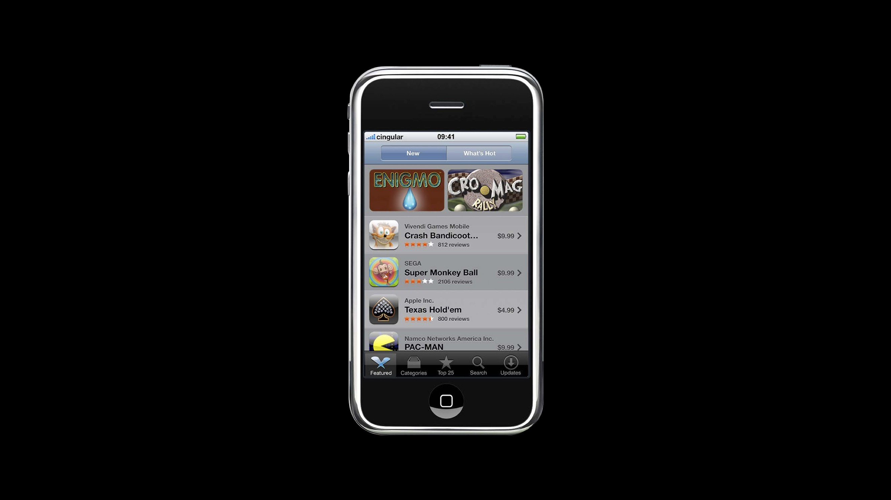
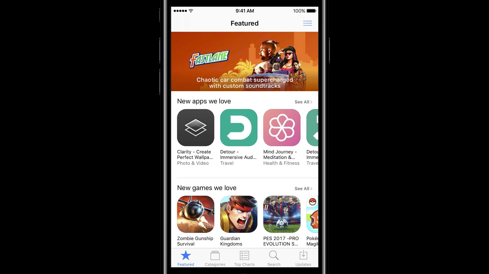
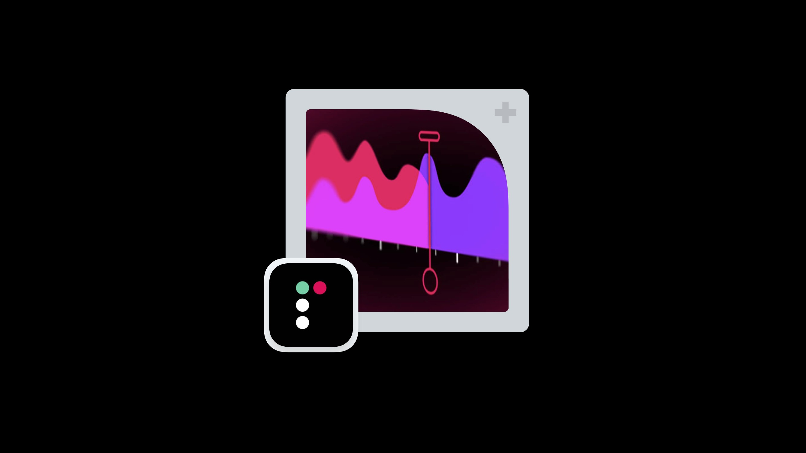
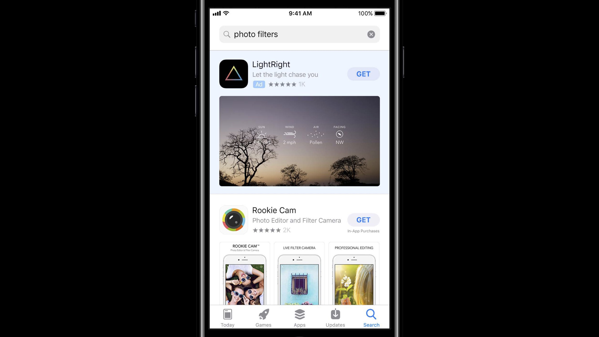

WWDC 2017 上 Apple 介绍了 iOS 11 中全新设计的 App Store，在随后的 Session 中也从设计、编辑等角度详细介绍了焕然一新的 App Store。按照其介绍的思路，结合一些其他相关资料，在 iOS 11 正式版即将发布之前，来一起深入了解下 iOS 11 的 App Store。
Note：
- iOS 11 App Store 的新功能、新设计介绍主要以 iPhone 设备为主；
- 有关 App Store 的细节以美区 App Store 为准；
- 由于大部分参考资料均为英语，所以部分词句没有翻译，即使翻译了的，可能也没有那么准确；
- 文章阅读对象针对于期望了解全新 App Store 的独立开发者、产品人、设计师、爱好者等；
- 成文时，iOS 11 正式版还未发布，新的 App Store 的功能和内容还在逐步增加。后续文章可能会有一些增删改。
Overview 总览
App Store 在 2008 年 7 月诞生，那时只有 500 多个 app。

一直以来 App Store 的结构和布局并没有发生大的变化，只有一些细微的调整。

九年过去了，到 2017 年在 App Store 里已经有了 220 万个 app。App Store 改变了 app 的购买和分发方式，也影响了我们生活的方方面面。
在这个历史节点，我们停下来思考如何让 App Store 变得更好？如何从头开始设计一个崭新的 App Store？从以下几点考虑：
- Daily destination：希望用户每天能够回到这里，把 App Store 作为一个每天的基础；
- Give a voice to our editors：把精力更多地放在从一开始就很出色的编辑策划上；
- Focus on games：突出 App Store 中游戏所扮演的重要角色，给应用和游戏一份更加清晰的重点划分。
Design 设计
在重新设计 App Store 时，我们考虑了两个问题：我们的设计目标是什么？如何做去满足这些设计目标？除了上面提到的这三个方面，在设计上再增加一条：Clarity and simplification，清晰简单，这一条对于设计来说十分重要。
Daily destination 每天的目的地、Give a voice to our editors 让编辑发声
Today：卡片式风格，每日更新，可查看最多七天的内容，目前每天会有六个内容更新。这些内容会在不同地区的 App Store 本地化，符合当地的文化习惯。Today 目前有十二种样式，各种样式穿插在一起，应用这些样式会呈现的内容会有：
- 新 app 的发布、app 崭新版本的发布；
- 杰出 app 的介绍、app 背后的故事、开发者访谈；
- 有关 app 使用的 tips、tricks、guide；
- 与一个主题相关的 app 合集推荐；
- App of the Day、Game of the Day；
- App 中内购的介绍与推荐。
每一个卡片的内容细节
- 交互形式：卡片点击后会有一个自然的过渡从中心展开，点击屏幕右上角的叉号、从卡片顶部向下滑动卡片、从屏幕左侧向右滑动都可以将卡片关闭。
- 具体内容：每个卡片的内容形式非常丰富，图片、文字、引用、视频、应用穿插在一起，你还可以将这个卡片分享出去，每个卡片实际上都对应一个网址。
每一个卡片的内容都可以在搜索中被搜索到，同时被这些卡片推荐的 app 的详情页上也会有这些卡片的入口（截止到 iOS 11.01 还未看到第二种形式）。

这些内容卡片模板的一些小细节：
- 「Today」tab 中页面滚动到带有视频的卡片并停下时，视频会自动进行静音循环播放；
- 横向三排式的 app 合集卡片在显示时会有一个从右向左的展示动画；
- 当一个卡片中只推荐了一个 app 时，页面向下滚动且滚动过封面图片时，页面底部会悬浮这个 app 的详情页跳转入口。
Focus on games & apps 聚焦游戏、应用
- 在以前，Games 和 Apps 是混在一起的，无论是其编辑推荐还是排行榜。对于游戏，可以细分为许多分类。意识到游戏的重要性和给 App Store 带来的巨大成功，我们为游戏单独设置了一个 tab—「Games」。
Games：在这里你能看到各种形式（单个 app、app 合集，视频、图片、文字介绍等）的游戏 app 的推荐，除了app 的推荐还包括内购的推荐、排行榜、分类等。「Apps」tab 亦是同样。在这里游戏 app 的细化分类可以被拿到顶层，用户可以直接找到自己想要的游戏。
用户在推荐页面可以得到有关 app 更多的信息：
- Subtitle：每个 app 都会有一个副标题（后有详细说明）；
- 来自编辑团队的推荐语。
一个有意思的小细节：「Games」tab 的火箭图标形状取自于 Apple 标志的叶子。
内购的推荐：在新设计的 App Store 中可以把 app 的内容像推荐 app 一样推荐。为了表示这是一个内购，我们设计了一种专属的卡片样式来表示内购。内购的推荐会出现在「Today」、「Games」、「Apps」的推荐中，亦会出现在对应 app 的详情页面上，还可以通过「搜索」找到。
App 内购的直接购买流程：对于一个 app 内购推荐，如果想直接购买，若你已安装这个 app，会直接打开这个 app 并显示购买确认页面，即可完成购买；若未安装这个 app，会提示你先购买/下载这个 app。
内购卡片的设计：内购卡片的设计关键一点是不能与 app 的样式混淆，当用户看到这个样式时应该知道这就是内购，这是来自于哪个应用的内购。
内购卡片中圆角的弧度与 app 图标的圆角弧度是一致的，或者说内购就是 app 的四分之一，表示内购是 app 的一部分。
把 app 的内购图片加上一个统一的框架，在左下角放上 app 的图标即构成了这个内购卡片。所以提供的内购图片的左下角不应有重要的信息。只有在 app 产品详情页上的内购卡片的左下角没有 app 图标。

如果想让 app 的内购能够作为推荐呈现出来，需要为每个内购提供一张图片，这张图片需要与这个内购的具体内容有关，它不应是一个 app 的截图或者是 app 的图标。
Clarity and simplification 清晰简单
Product Page：这里是每个 app 的家。随着时间的流逝，在 app 的详情页上有了越多的信息和功能。我们需要对这个页面做出简化，特别是页面的前半部分，因为这是用户打开产品详情页首先映入眼帘的部分。各种各样的信息都应该被清晰的传达给用户。
App 图标、更加醒目的 App 名称、副标题（会先显示几秒的开发者名称再显示副标题，没有副标题则只显示开发者名称）、价格及购买按钮、更多/分享
- App Icon：这是用户会看到的第一个元素，对于给用户留下强烈的印象和传达 app 的品质和目的十分重要。App Icon 要做到简单、易识别。为了保证在不同尺寸下的 App Icon 都是清晰可见的，不要在 icon 中添加不必要的视觉细节。上传的 icon 图片要求 1024*1024 像素。
- App Name：选取一个简单好记、易拼写、能表明 app 是做什么的来作为 app 名字。名字要与其他 app 区分开来，不要使用一些通用术语或与其他已有的 app 相似的名字。App Name 最多 30 个字符。
- Subtitle：从 iOS 11 开始，Subtitle 将出现在 App Name 的下面，最多 30 个字符。推荐使用简练、吸引人的一句话来作为 Subtitle，避免如「世界最好」的这种通用描述，可以通过 Subtitle 来表明 app 的亮点、典型功能等。每次提交一个新版本的 app 时，可以改变一次 Subtitle。
App 的评分（没有评分会直接写明评分信息不足）、编辑推荐（如有）、在 app 首要分类的排行榜中的名次、年龄评级信息 Age Rating 在一行呈现；
- 分类 Categories：你可以给一个 app 设定两个分类，一个首要分类，一个次要分类。首要分类决定了 app 会出现在哪个分类目录下，影响搜索过滤结果，决定是出现在「Apps」tab 还是「Games」tab。首要分类应该符合你 app 的主要功能。
- 分类反映你 app 的目的、主要功能、主题；
- 想想用户在找你这样的 app 时会自然想到哪个分类；
- 看看同类 app 是怎么做的。
- 分类 Categories：你可以给一个 app 设定两个分类，一个首要分类，一个次要分类。首要分类决定了 app 会出现在哪个分类目录下，影响搜索过滤结果，决定是出现在「Apps」tab 还是「Games」tab。首要分类应该符合你 app 的主要功能。
其他包含此 app 的 bundle（如有）；
更新了什么：包括了当前版本更新日志和进一步查看历史版本的更新日志；
- 每次升级 app 时，都可以利用「What’s New」告诉用户发生了什么改变；
- 默认显示前三行信息，点击「more」展开查看全部；
- 只有你购买过的 app（无论现在是否已下载），「What’s New」才会显示在 App Icon 下面的部分，否则会放在「评分和评论」部分之下。因为对于购买过的 app，用户更关注这个 app 最近更新了什么；而对于还未购买过的 app，用户更关注这个 app 有什么特色，更需要从视频、截图、应用介绍中了解这些信息。「内购和订阅」部分的逻辑亦是如此。
订阅和内购推荐；
- 推荐的订阅和内购将被分成两个部分展示在产品详情页上；
- 开发者可以最多添加 20 个推荐条目；
- 每个条目都有它自己的名字（避免通用性名字，最多 30 个字符）、营销图片（1024*1024）、描述（最多 45 个字符），可以自定义条目的显示顺序；
- 可以被搜索到，同时会被推荐到「Today」、「Games」、「Apps」中；
- 在一个特定的设备上，开发者可以自定义用户会看到那些推荐的内购。比如用户已经购买的可以隐藏、根据用户的游戏等级推荐相关内购。
- App 需要支持 SKPaymentTransactionObserver 方法才能实现上述功能。
视频、app 截图、在其他设备上是否可用（默认收起），视频默认自动静音播放，并可以最多添加三个视频；
- 视频预览：预览视频可以展示你 app 的特色、功能、UI，每段视频最长 30s，默认自动静音播放，确保第一段视频的前几秒能够快速抓住用户的心，最多可以添加三段视频。每一段视频都可以进行本地化，针对于每种 App Store 语言进行翻译。在「Preview」中首先会展示视频，截图会展示在视频之后。
- 在视频没有自动播放时，会显示 app preview poster frames，确保这张图片是足够吸引人的。
- iOS 10.3 及之前版本的用户只能看到第一个预览视频。
- 截图：最多可以添加五张图片，前两张图片应该突出 app 的重要特色，因为在搜索结果中，如果在 app 有视频预览的前提下，通常情况（竖屏截图、iPhone）下这两张图片会被展示出来。横屏截图的条件下，搜索结果中只会显示第一章截图或第一个预览视频。
App 介绍 App Description
- 提供一段吸引人的、能够凸显 app 功能和特色的文字来作为 app 介绍。理想的 app 介绍应该是简洁有效，简洁地描述 app 是做什么的，之后每一个段落说明一个主要功能，在表达上使用用户看得懂的话。
- 介绍的第一句话十分重要，因为默认情况下会显示介绍的前三行。斟酌每一个字词，将最重要的功能放在第一句话中。有关于 app 获得的荣誉可以放到最后。
- 不要在介绍里放上一些没必要的关键词企图影响搜索结果，也避免在介绍中包括特定的价格信息。因为价格已在产品详情页上说明，且这些信息在不同国家和地区是不同的。
- 你只能在你提交 app 新版本时更新 app 介绍信息。
营销信息 Promotional Text：最多 170 个字符，会出现在应用描述的上方。无需提交 app 新版本，即可更新这个信息。可用这个信息来分享 app 的最新消息，如最新促销、内购促销、即将上线的功能和内容、限时特价等。注意营销信息不能作为搜索的索引。
开发者入口：从这里可进入开发者页面，查看开发者的所有 app。
评分和评论 Ratings & Reviews：评分在上，评论在下，评论从左向右排布，简化了其呈现形式，更加容易阅读，去除了当前版本和所有版本的区分，所以升级 app 并不会隐藏之前的评分；
- 开发者可以在 iTunes Connect 回复用户的评论以解决用户的反馈、问题或关注。开发者回复后，用户可以收到被回复的提醒，并且可以选择更新评论。只有最新的评论和回复会被显示在产品详情页上。
- 当你提交 app 的新版本时，你可以重置你的评分，谨慎使用此功能。
编辑推荐词（如有）。
更多信息：开发者、app 大小、分类、兼容性、语言、开发者网站、隐私政策、包含的内购等；
支持：如 Wallet、Family Sharing、Game Center 等.
Featured In：收录这个 app 的相关 Story，截止到 iOS 11.01 暂未找到实例，下图为效果图。
更多来自于这个开发者的 app 和根据这个 app 的推荐。
导航栏：当页面向下滚动，滚过第一部分时，导航栏上就会显示这个 app 的 icon 和购买按钮，方便在浏览时随时完成购买下载动作。
Product Page 纵览（点击下图查看完整图片）

Editorial 编辑
Our principles 我们的原则
We celebrate apps 我们赞美 app：在这个更大的编辑平台中，我们有能力提供更多内容、更多观点、更多推荐，但这不意味着我们突然对 app 进行审核、批判，编辑团队应该是 app 的啦啦队，赞美应用和应用文化。
We are the voice of the App Store 我们是 App Store 的发声者：我们不仅思考要写什么，还在思考我们怎样去写？我们要做到真诚可靠、聪明有趣、谦恭友好、充满激情，我们要让内容有苹果范儿，斟酌每个字每个词，我们要尽力帮助用户参与其中。
We offer independent insights 我们要提供独立的见解：App Store 是一个付费应用商店，但用钱并不能让你的 app 被推荐。在新的 App Store 的「Today」、「Games」、「Apps」中没有广告，编辑希望把有独特角度、有个性的文章与你分享。我们希望用户能够基于此而完全信任我们的内容、我们的推荐，这样用户才会每天回来，在 App Store 中找到巨大的价值。
We tell interesting and important stories 我们讲述有趣、重要的故事：从有趣到十分有趣到既有趣又重要，这是我们的目标。在 App Store 不仅要告诉你这个 app 很厉害，还会告诉你我们为什么这样认为。在这里我们提供发人深省的观点和内容。
We deliver a fresh and unexpected take 我们传达一种清新且意想不到的观点：App 的世界发展迅速，我们要去反映那些创新文化。开发者通过 app 改变生活的方方面面，我们也要与你们并肩一起，跟上你们的步伐。
New tabs 新的 Tab
- Today：每天更新，在这里聚焦观点。用户可以在卡片上直接购买喜欢的应用和游戏，亦可以点击卡片了解应用和游戏的故事。
Games & Apps：你可以看作这是包含排行榜、分类的「Feature」tab 的 2.0 进化版本。虽然不会像「Today」一样每天更新，目前会每周进行更新，以后会更加频繁。在这里用户会有更多的选择。
Every app has a story to tell. 每一个 app 都有一个故事可讲。我们要找到每一个 app 中的闪光点写成故事，关于这些故事，我们确定了四个主要的主题：
- Gaming——Apps are the future of gaming 大游戏、小游戏、汽车游戏、动作游戏、角色扮演游戏、跑酷游戏，应用是游戏的未来。
- Lifestyle——Apps transform your life 社交、摄影、约会、健身、下厨、通勤应用，应用改变你的生活。
- Culture and Entertainment——Apps shape culture 音乐、电影、时尚、电视应用，应用塑造文化。
- New Tech and Innovation——Apps change everything 新服务、新想法、新能力，应用改变着一切。
当把这些主题写成故事时，这里三个核心目的：
- Inform 告知：要及时，要告诉用户他们需要知道的信息，让他们知道世界发生了什么，比如 Netflix 上有了一个新节目；
- Help 帮助：要指导，要动员，分享那些对我们很直观但对用户并不是的想法，让用户重温那些之前下载但可能已经闲置一旁的应用，给予全新的动力，比如如何最大化利用 Instagram 的功能；
- Inspire 启发：应用于创造性内容、鼓舞人心的内容、独到见解的内容，这些令人鼓舞的内容可能会走向全世界。
More options
More ways to be featured than ever. 这里有比以前更多的各种各样的形式可以用来推荐 app。举几个例子（在 iOS 11 版本的 iPhone、iPad、iPod 的美区应用商店中才能打开以下链接）：
The big question
- How do you reach us?：访问「Contact the App Store Team」（需要开发者身份登录）
- 如果你即将发布一款新 app、新游戏，即将发布一项重要意义的升级，或者你关于 app 有一段独特的故事，希望在推出时被 App Store 推荐，你可以提前 6-8 周告知 Apple 你的故事。
- 基本的开发者信息（开发者名字、网站）、app 信息（app 的名字、ID、描述、版本号、版本亮点、发布平台、是否针对儿童、语言、地区、计划提交日期、计划发布日期）、相关链接（网站、demo 视频、其他展示等）、商业模型（Free、Paid、Freemium、Paymium）、市场推广计划、最重要的是你的故事（最多 1000 个字符）。
What now？
iOS 11 的 App Store 发生了如此多的变化，从焕然一新的设计到独特角度的故事。除了 AppStore 本身对应用的推荐，每个开发者也应该特别注意以下这些变化，并且做出改变：
- In-App Purchases：内购和订阅现在可以被推荐、被搜索；
- App Name & Subtitle：App 名字被限制为 30 个字符，但增加了副标题；
- Video App Preview ：自动播放、可以本地化的预览视频；
Promotional Text：最多 170 个字符，会出现在应用描述的上方；
Ratings and Reviews
- iOS 10.3 中加入了在应用内评分的功能，开发者可以回复用户的评论。开发者回复后，用户可以修改评论，通常用户都是把评论越改越好。
- 要使用应用内评分，需要调用 SKStoreReviewController API。在 365 天内最多请求用户评分 3 次。
- 每次提交 app 的新版本时，评分不再会被自动重置，不会再有当前版本和所有版本的区分。但开发者可以决定在提交时是否要主动重置评分，这要十分谨慎，三思而后行，毕竟用户非常看重这个数据。
- 强烈建议将回复用户评论作为日常事务之一。现在已经支持在 iTunes Connect 中分配用户角色为「客户支持」，该角色仅可以对评论进行回复。
Search
Search Ads：目前在美国、英国、澳大利亚、新西兰可用。转化率达到 50 %。从 2017 年 10 月 17 日开始，Search Ads 功能会在加拿大、墨西哥、瑞士上线。

Search Keywords：搜索关键词可以决定你的 app 在搜索结果中怎么呈现。仔细考虑当用户想搜索你这种 app 时会用到哪些词语，使用这些词语作为你的搜索关键词。
- 过于笼统或过于具化的术语都不利于用户找到你的 app。
- 搜索关键词用逗号分隔，最多 100 个字符。
- 要避免的情况：1.有了单数形式的词再用复数形式；2.分类的名称或者词语「app」；3.重复的字词。
- 可能会被拒绝审核的关键词，不能使用的关键词：1.未授权的商标名称、名人的名字和其他受保护的字词；2.与 app 不相关的字词；3.竞品 app 的名字；4.不相关、不合适、无礼的、令人讨厌的字词。
影响搜索结果的因素：
- 搜索信息与 app 信息的匹配度；
- 用户的下载、评分、评论等行为；
- App 的搜索关键词；
- App 的 名字、副标题、描述；
- App 设置的首要分类；
- 推荐的内购；
- 搜索广告。
更强大的搜索：除了应用，搜索目前可以搜索到开发者、内购、分类、故事、技巧、合集等。
至此，从「Today」到「Games」、「Apps」再到「Product Page」、
「Search」，App Store in iOS 11 已了解完毕。无论是从设计还是编辑角度，App Store 都是焕然一新。可以看出，从 iOS 11 开始 Apple 期望用户能够从 App Store 中发掘出更多内容，强化以人工推荐为主的内容，弱化排行榜、分类这些自动生成的数据。
目前，美区的 App Store 中的「Today」已经开始每天频率的内容更新，中区的 App Store 暂时还是一周一更新。期待 iOS 11 正式发布后，App Store 为应用带去的崭新的活力。
参考内容
- Introducing the New App Store - WWDC 2017
- App Store - Apple (中国)
- The All-New App Store - Apple Developer
- Discovery on the App Store - App Store - Apple Developer
- App Store Product Page - App Store - Apple Developer
- App Previews - App Store - Apple Developer
- Promoting Your In-App Purchases - App Store - Apple Developer
- App Store Search - App Store - Apple Developer
- Ratings, Reviews, and Responses - App Store - Apple Developer
- Choosing a Category - App Store - Apple Developer
- iTunes Connect 开发人员帮助
如果你觉得这篇文章对你有所帮助，欢迎请我喝杯咖啡，感谢你的支持😁


{kind=link}
{kind=link}
{kind=link}
{kind=link}
{kind=link}
{kind=link}